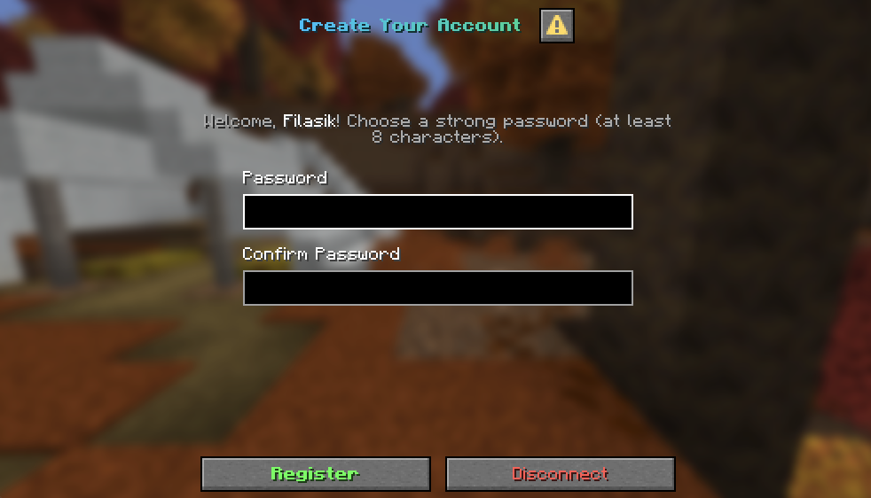
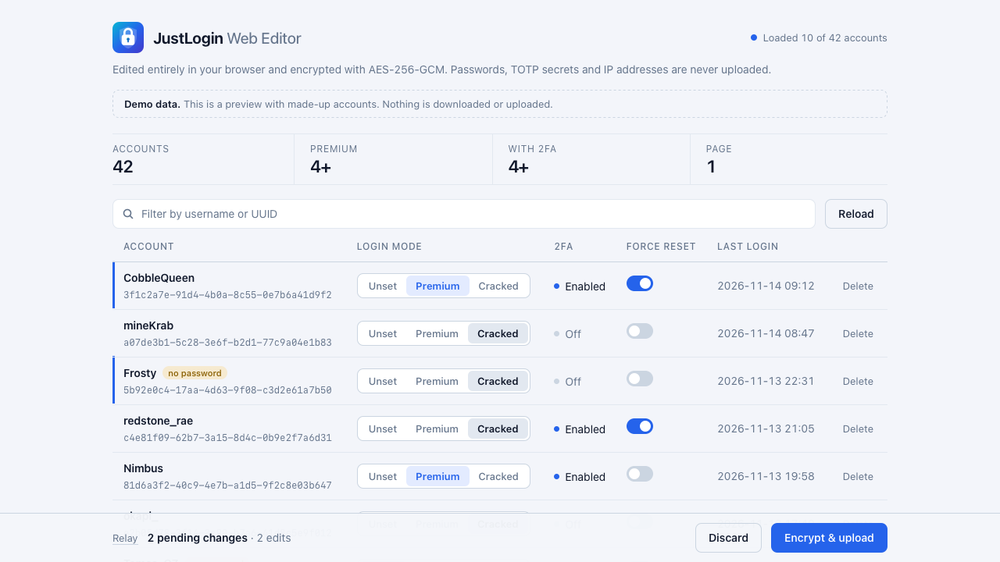

Login for Minecraft servers that does its job and stays out of the way.
Cracked and premium authentication for Paper, Folia, Velocity and BungeeCord. Players register and log in before they ever spawn, passwords are hashed with Argon2id, skins persist automatically, and every account keeps one UUID for good.
- Paper 1.21.7 – 26.x
- Folia
- Velocity 3
- BungeeCord
- Java 21+

Everything a login plugin has to get right.
No limbo servers and no chat spam while players wait. JustLogin covers registration, login, recovery and migration, and keeps the heavy work off the main thread.
Authenticate before spawn
On Paper 1.21.7+ players use a native dialog in the configuration phase. Older clients and Bedrock fall back to commands or Cumulus forms.
Premium, UUIDs & skins
Mojang-verified players can use /premium on standalone Paper or behind a proxy and keep their exact server UUID. Cracked joins optionally restore matching Mojang skins, and players can switch anytime with /skin <player|reset>.
Argon2id hashing
Memory-hard hashing in a bounded worker pool. Legacy AuthMe, BCrypt and PBKDF2 hashes are verified and upgraded when the player next logs in.
2FA and recovery
RFC 6238 TOTP with single-use backup codes, optional SMTP password recovery, and an anti-bot captcha you can switch on when needed.
Proxy ready
Velocity and BungeeCord companions forward authentication state with signed messages and can lock players to your auth servers until they log in.
1-click migration
Auto-import from AuthMe, FastLogin, LibreLogin, LoginSecurity, nLogin, OpeNLogin, LimboAuth and Authy via /jl import auto. Messages ship in English, Czech and Slovak.
A login plugin should be easy to inspect.
You are trusting this code with your players' passwords, so all of it is public under the MIT license. These are design decisions you can verify in the source.
Found a vulnerability?
Please report it privately and do not open a public issue. We will work with you on a fix before anything is disclosed.
security@justlogin.net You can also use GitHub's private vulnerability reporting. Only the latest release receives security fixes. See SECURITY.md.-
Passwords never reach the logs. A Log4j2 filter redacts credential commands before they are written anywhere.
-
Fails closed. Connections before the plugin is ready, and proxies with a missing or placeholder shared secret, are refused instead of let through.
-
Signed proxy messages. HMAC-SHA256 with a nonce and timestamp, compared in constant time.
-
Secrets are protected at rest. TOTP secrets are encrypted with AES-256-GCM and player IP addresses are stored as keyed hashes.
-
Risky features are opt-in. IP sessions and automatic Mojang detection are off by default.
-
No hidden telemetry. The only metrics are anonymous bStats, which you can turn off with
metrics: false. The update check only reads GitHub releases.
Manage accounts in a browser. Nothing readable leaves your machine.
Run /jl editor and the plugin prints a link. The decryption key sits in the part of the URL after #, which browsers never send to any server. The page decrypts and edits everything locally.
- Open the link from
/jl editor.Your accounts are encrypted with AES-256-GCM before they are uploaded to the relay.
- Make your changes.
Switch login mode, force a password reset or delete accounts. Passwords, TOTP secrets and IP addresses are never included.
- Apply them in-game.
The editor gives you a
/jl applyeditscommand. Nothing changes until you run it.

Drop it in and start the server.
- Put the JustLogin jar into
plugins/on your Paper or Folia server.
Behind a proxy, also install the Velocity or BungeeCord companion jar. - Start the server once so
config.ymland the message files are created.
Defaults work out of the box. - Adjust the config and run
/jl reload.
New options are added to existing configs automatically on update.
# plugins/JustLogin/config.yml locale: en login: ui: dialog # dialog | command premium: standalone-enabled: true auto-detect-mojang: false skins: enabled: true restore-cracked-by-name: true proxy: enabled: false # true behind a proxy shared-secret: "" # 16+ random characters storage: type: sqlite # sqlite | mariadb